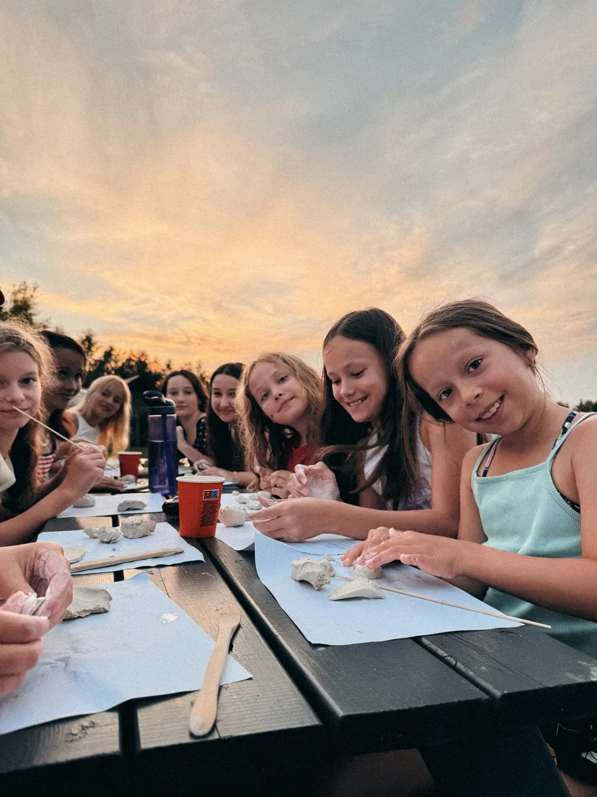

WSPÓLNA ZAJAWKA
Sport, natura, podróże i chęć odkrywania nowych rzeczy.

To Wy tworzycie LONGWAVE!
Od początku chcieliśmy tworzyć coś więcej niż produkty, obozy czy pojedyncze wydarzenia.
Chcieliśmy łączyć ludzi, których napędzają podobne rzeczy - sport, natura, podróże, kreatywność, chęć próbowania czegoś nowego i po prostu radość z życia.
Dzisiaj LONGWAVE to społeczność osób w różnym wieku, z różnymi doświadczeniami i zainteresowaniami, ale z tą samą otwartością na wspólne przygody.
Jedni poznali nas na obozie wiele lat temu, inni podczas eventu, rodzinnego wyjazdu, warsztatów czy spotkania na wodzie.
I właśnie Wy sprawiacie, że LONGWAVE jest tym, czym jest!
#longwavefamilyvibes
Sport, natura, podróże i chęć odkrywania nowych rzeczy.
Nowe znajomości, przyjaźnie i wzajemne wsparcie.
Różny wiek, różne umiejętności, jedna wspólna energia.
Wyjazdy, projekty, wydarzenia i wspólne historie.
Na naszych wyjazdach zawsze dużo się dzieje.
Sporty wodne, warsztaty, wycieczki, integracje, wspólne rozmowy, pierwsze sukcesy i pokonywanie własnych barier.
Ale kiedy pytamy samych siebie, co w tym wszystkim jest najważniejsze, odpowiedź jest bardzo prosta.
LUDZIE!
To z nimi dzielimy emocje, śmiech, małe i wielkie sukcesy.
Z osobami, które jeszcze chwilę wcześniej były dla siebie obce, tworzymy zgraną ekipę.
I bardzo często właśnie te relacje zostają na dłużej.
Nie bez powodu nasi uczestnicy sami zaczęli nazywać to, co dzieje się podczas wyjazdów, rodziną LONGWAVE.

Bardzo zależy nam na atmosferze, w której każdy czuje się swobodnie.
Nie musisz być świetnym sportowcem, mieć doświadczenia na wodzie ani znać wszystkich od pierwszego dnia.
Możesz dopiero zaczynać swoją przygodę, mieć milion pytań, próbować nowych rzeczy albo po prostu cieszyć się wspólnie spędzanym czasem.
Stawiamy na kameralne grupy, wzajemne wsparcie i dobrą integrację — bez niepotrzebnych podziałów.
Uwielbiamy obserwować, jak uczestnicy nawzajem się motywują. Ktoś przełamuje strach, ktoś robi pierwszy ślizg, ktoś odkrywa zupełnie nową zajawkę, a cała ekipa cieszy się razem z nim.
I wtedy dzieje się coś naprawdę magicznego, a zarazem tak bardzo prawdziwego! <3

Kadry LONGWAVE


LONGWAVE to nie tylko obozy dla dzieci i młodzieży.
To również wyjazdy rodzinne, spotkania dorosłych, eventy, sportowe weekendy i wspólne projekty.
Uwielbiamy ten moment, kiedy przy jednym stole spotykają się ludzie w różnym wieku.
Dzieci, rodzice, dziadkowie, przyjaciele.
Jedni wybierają poranną jogę, inni wskakują na deskę, a jeszcze inni wolą kawę, rozmowy i chwilę odpoczynku.
Każdy może spędzać czas po swojemu, a mimo to cały czas jesteśmy razem.
Bo najfajniejsze wspomnienia często powstają właśnie wtedy, kiedy spotykają się różne pokolenia i różne spojrzenia na świat.

Chcemy, żeby LONGWAVE było przestrzenią, która inspiruje do działania.
Na naszych wyjazdach uczymy się nowych sportów, rozwijamy umiejętności, odkrywamy zainteresowania i zdobywamy doświadczenia, które zostają z nami znacznie dłużej niż sam wyjazd.
W programach pojawiają się nie tylko sporty wodne, ale też warsztaty kreatywne, zajęcia z pierwszej pomocy, joga, rozmowy, wykłady i aktywności, które uczą współpracy.
Z roku na rok rozwijamy nasze projekty o nowe pomysły i praktyki.
Bo sami wiemy, jak ważna jest świadomość, uważność, ruch i dbanie o siebie - zarówno fizycznie, jak i mentalnie.
Chcemy przekazywać tę zajawkę dalej. Szczególnie młodemu pokoleniu.
Nie chodzi tylko o to, żeby nauczyć się pływać na desce.
Chodzi o odwagę, samodzielność, przyjaźnie, rozwój i odkrywanie własnych możliwości.

Jednym z najpiękniejszych momentów naszej pracy jest obserwowanie uczestników, którzy przyjeżdżają pierwszy raz, a wracają do nas na kolejne wyjazdy.
Widzimy, jak rosną, zmieniają się, nabierają pewności siebie i rozwijają swoje pasje.
Cieszymy się z ich sukcesów nie tylko tych sportowych.
Z każdej nowej znajomości, przełamanej bariery i chwili, w której ktoś uwierzył w siebie trochę bardziej.
A później otrzymujemy wiadomości od Was i od rodziców, zdjęcia, wspomnienia i opowieści.
I za każdym razem utwierdzamy się w przekonaniu, że to wszystko naprawdę ma sens.
Dla nas to coś dużo większego niż organizowanie kolejnych wyjazdów.
To ludzie, przyjaźnie i historie, które tworzymy razem.
Za każdą wspólną przygodę.
Za Waszą otwartość, dobrą energię, wsparcie, zaufanie i wszystkie wiadomości, które do nas wysyłacie.
Za to, że wracacie, zabieracie znajomych, dzielicie się swoimi pomysłami i razem z nami rozwijacie LONGWAVE.
Od pierwszych warsztatów po dzisiejsze wyjazdy i wydarzenia jesteście ogromną częścią tej historii.
Super jest tworzyć to wszystko razem z Wami! 🧡

Porozmawiajmy o Twoim wyjeździe
Opowiedz nam, co planujesz. Pomożemy dobrać wyjazd, termin lub program dla Twojej grupy.